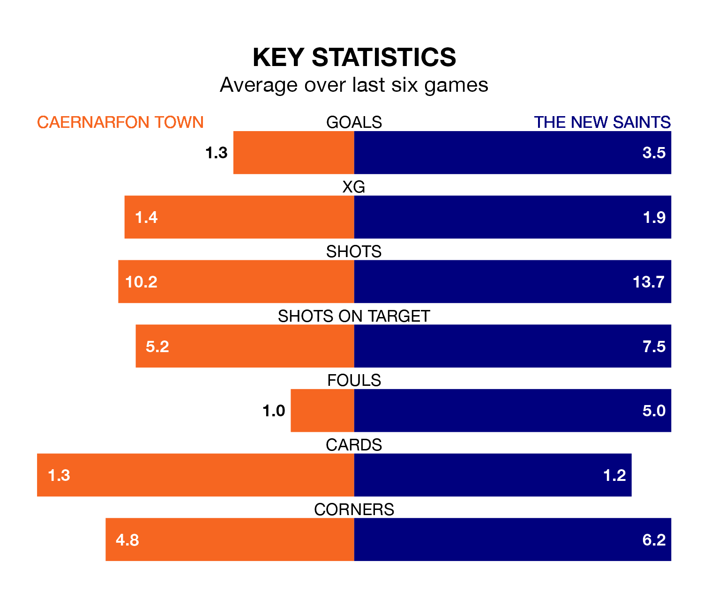

Relegation candidates Caernarfon Town face a challenge against high-flying The New Saints at the Oval on Friday.
Caernarfon Town are rooted to the bottom of the Welsh Premier League table, and have picked up nine wins and six draws in their 24 games to date.
The Saints, meanwhile, are top of the standings with 68 points, having won 22 and drawn two.
With 81 goals in 24 games so far this season, The New Saints are the league's highest scorers with 3.4 goals per game. And they are conceding fewer than average, letting in 14 goals at a rate of 0.6 per game.
Caernarfon are also above average scorers, with 1.8 goals per game, compared to a league average of 1.5. They have also conceded 1.8 goals per game.
Town are in disappointing form in the Welsh Premier League, with one win and three draws from their last six games.
With six wins and no losses over that period, the Saints' form is much better – they have taken 18 points from 18, compared to the Canaries' six.
In the last 10 years, Caernarfon and The New Saints have played each other on 19 occasions. Caernarfon won two of them, The New Saints 16, and they drew once.
On average, the Canaries scored 0.6 goals and the Saints 2.4 in those matches.
Their last meeting was on December 26, when The New Saints won 2-1 at home.
Caernarfon's last match was on February 10, a 2-2 draw against Cardiff Met, with Gwion Dafydd and Sion Bradley getting the goals for the Canaries.
The New Saints beat Bala Town 1-0 last time out, on February 9, with Brad Young on the scoresheet.
Updated: 10:08 (UTC), 23/02/24